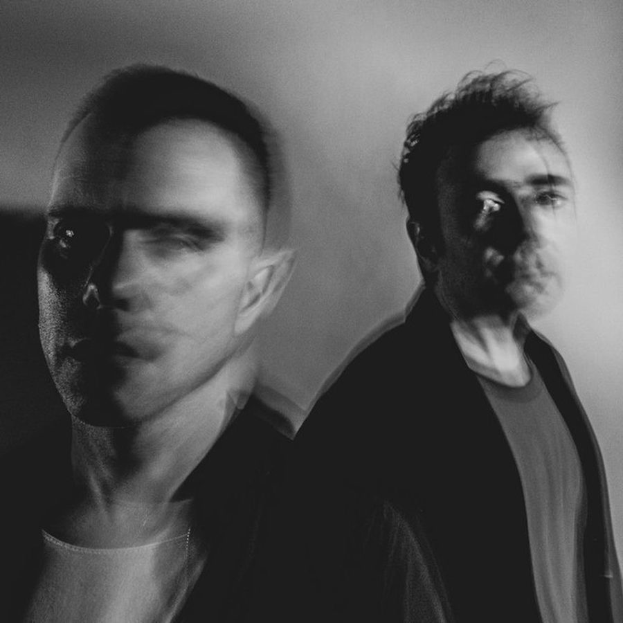

The Presets [Audio]: Battening down for the Apocalypso


STREAMING AUDIO INTERVIEW
If you’re a fan of the Modular Records style indie/dance sound, then 2008 has so far proved to be one big sugar rush so far: Cut Copy released their sophomore In Ghost Colours to critical acclaim, Van She are back on the touring circuit with their debut long player due later this year, and we’ve just been hit by what could possibly be the biggest earth-shaker yet: the highly-anticipated second album from The Presets’, which goes by the unassuming name of Apocalypso. Could this be the release that’ll bring an end to the indie/dance world as we know it?
According to the ITM review, the Sydney duo of Julian Hamilton and Kim Moyes have come up with a sound that’s as big, grand and fiery as the coming of the Four Horsemen of the Apocalypse. After several years on the road taking their sound to an international audience, “they began writing an album. Apocalypso is what they came up with. Much like the last few years have been quite a journey for the lads, so is this also; and it’s one hell of a ride indeed….”
And it’s an exciting and riveting time for the boys indeed. All eyes are on The Presets, and they’ve got a massive year ahead of them, both here and abroad. “Up until the weekend, it’s sort of been coming in dribs and drabs, but now it’s coming in full force. With all the press, and getting a real sense of the anticipation for it. So now it’s a very exciting time, in the lead up to it… We’ve done a lot of hard work over the past couple of years, and everything has come together in a really natural, nice way.”
Get yourself ready for the apocalypso, then. Kim from The Presets talks to ITM’s Angus Paterson about the grand (and wicked) plans they have for Apocalypso, about holding their own on the international stage, as well as that run in that the band had with rock n’ roll diva Billy Corgan of the Smashing Pumpkins on the recent V Festival tour.
The Presets’ Apocalypso is in the stores now through Modular/Universal, and they’ll be back for the following shows mid year…
Thu Jun 12 – The Roxy, Parramatta
Fri Jun 13 – Enmore Theatre, Sydney (SOLD OUT)
Sat Jun 14 – The Tivoli, Brisbane (SOLD OUT)
Sun Jun 15 – The Tivoli, Brisbane (SOLD OUT)
Thu Jun 19 – The Metropolis, Fremantle
Fri Jun 20 – HQ, Adelaide
Sat Jun 21 – The Forum, Melbourne (SOLD OUT)
Sun Jun 22 – The Forum, Melbourne (SOLD OUT)
Mon Jun 23 – Enmore Theatre, Sydney
And check out the mayhem they inspired in the crowd at the recent V Festival in Sydney… While Billy Corgan was pissing and moaning over the other side of Centennial Park!